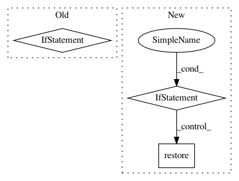

a02275482389c3f741484b15c2618677955f4ada,directory-gan.py,,,#,286
Before Change
init = tf.initialize_all_variables()
saver = tf.train.Saver()
save_file = "saves/"+config["uuid"]+".ckpt"
if(os.path.isfile(save_file)):
print(" |= Loading network from "+ save_file)
sess.run(init)
tf.train.start_queue_runners(sess=sess)
After Change
print(" |= Loading network from "+ save_file)
config["uuid"]=config["parent_uuid"]
ckpt = tf.train.get_checkpoint_state("saves")
if ckpt and ckpt.model_checkpoint_path:
saver.restore(sess, save_file)
print("Model loaded")
else:
print("No checkpoint file found")
else:
init = tf.initialize_all_variables()
sess.run(init)
In pattern: SUPERPATTERN
Frequency: 3
Non-data size: 3
Instances
Project Name: HyperGAN/HyperGAN
Commit Name: a02275482389c3f741484b15c2618677955f4ada
Time: 2016-06-29
Author: martyn@255bits.com
File Name: directory-gan.py
Class Name:
Method Name:
Project Name: asyml/texar
Commit Name: db19408b9dba8b85a16d9a7b58c5bb366d600c7c
Time: 2018-04-26
Author: shore@pku.edu.cn
File Name: examples/transformer/transformer_overall.py
Class Name:
Method Name:
Project Name: OpenNMT/OpenNMT-tf
Commit Name: aa35d9115f4cdad559cf7eca77835513367d550e
Time: 2019-07-18
Author: guillaume.klein@systrangroup.com
File Name: opennmt/utils/checkpoint.py
Class Name: Checkpoint
Method Name: restore